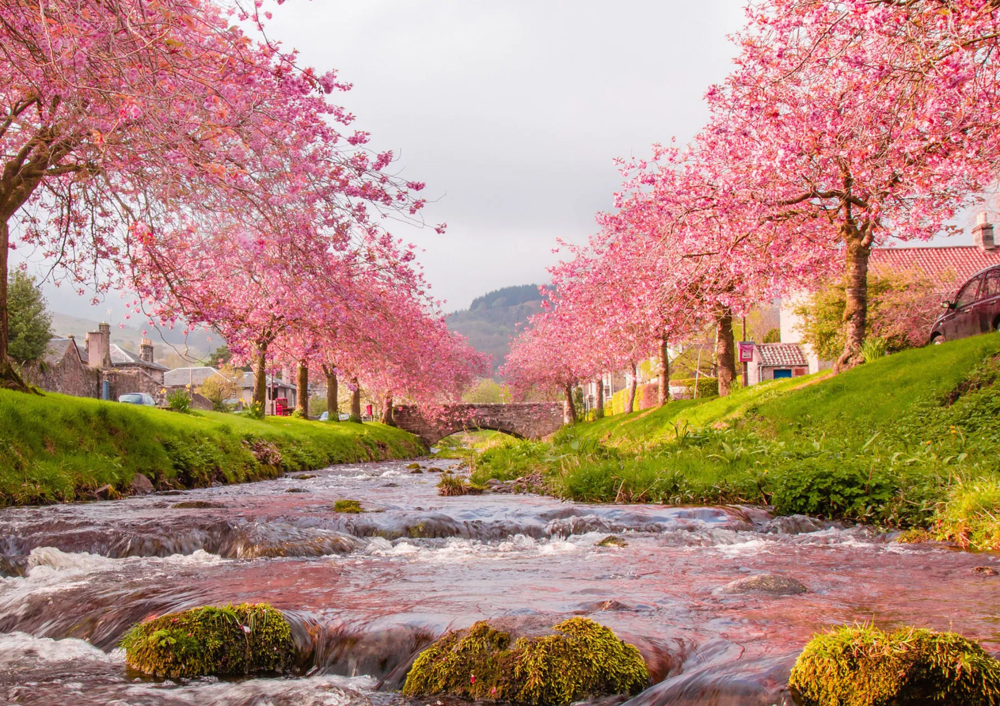

Jepang atau biasa juga disebut negari Sakura merupakan salah satu negara dengan keindahan yang sangat dikagumi oleh berbagai negara. Budaya dan tempat-tempat yang indah di Jepang, sangat mampu menarik kekaguman dan minat orang untuk datang, menyaksikan, dan menikmati secara langsung akan segala keindahan yang ada di negara tersebut.
Beberapa tempat di bawah ini, akan membuat anda sangat ingin mengunjungi negara sakura tersebut
Untuk anda yang menyukai budaya Jepang, mungkin bisa melihat beberapa budaya yang menarik ini